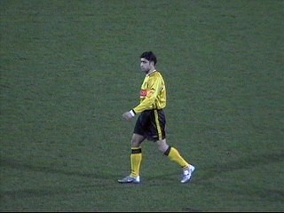
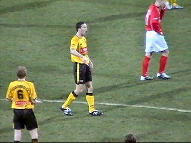
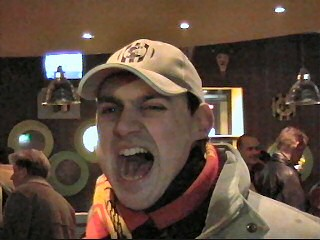

|
Roda JC - AZ (3-1) 31 januari 2004 |
Het pettengehalte aan de Steh-tische is groot ;-)
De Alkmaarder opkomst was bedroevend.
Sjtimmung in Z16!
De onvermijdelijke raad van elf met een
traditionele miskleun richting doel alsmede de
even onvermijdelijke Roda-rat (kan die niet naar
NAC weggepromoveerd worden) :-))
Roda-AZ heeft een abonnement op guur weer.
In de 21e min. scoort Ioannis 1-0. Tot dat moment
was de wedstrijd niet om aan te zien.
Kone was vandaag onnavolgbaar en scoort hier
2-0 (25'). Danke....Bitte....

Timmer is verslagen.
Kone scoort 3-0 (45')!
Wat een feest!
In de tweede helft geeft Roda het niet echt uit
handen maar toch weet de jeugdinternational,
Wisse, 3-1 te scoren (69').

Nadat Van Dijk al eerder gewisseld werd voor
Vicelich mag Sonkaya voor het eerst sinds tijden
spelen. In de 74e min. wordt hij ingebracht voor
Senden.
Vandenbroeck in duel met Perez.
Daar is dan eindelijk Marco van Hoogdalem die
Sergio in de 84e min. mag vervangen.

Geel/zwart maakt de man!
Na de 1-5 zege in Alkmaar nu een 3-1 in eigen
huis. Dat is samen......... 8-2!
Hey, hey, hey!!!!
De gebruikelijke verkeerschaos is simpel te
vermijden....
.... door aangenaam te verpozen in de omloop...

... of in de Kick Off waar weer een aantal KVM
mensen aanwezig waren. Klasse!
DD bedankt voor het Portugal-shirt!!!
K. met oud-Rodameëdsje Tanya.
Senden was de enige Rodaspeler in de KO.
De WC Eend verslaafde M. uit G. ziet zijn kans
schoon.....
Er bleken een aantal AZ-supporters aanwezig te
zijn in het supportershome die nog even hun
vlag wilden showen.
Door de zege van vanavond "klimt" Roda JC
naar de achtste plaats.